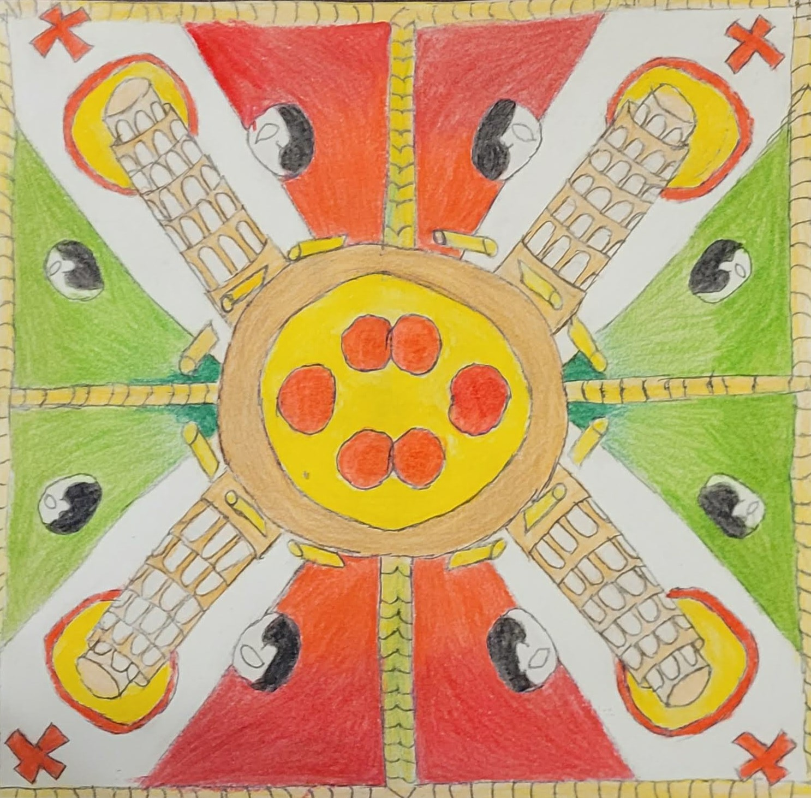
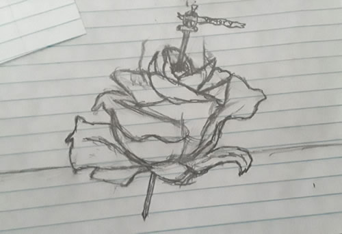
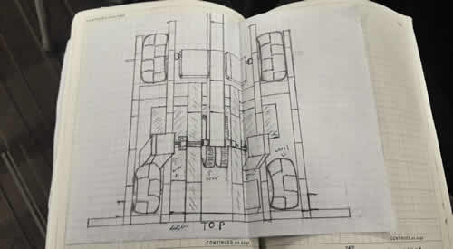

An Art portfolio by Caleb Sowah
Biography
I am a senior in high school. I have a mom, dad, and one sister. I plan on majoring in industrial design in college.
Italy Mandala

This piece is a mandala, I did in art 1 to showcase my bledning and coloring skills.
Rose

This piece is one of my own sketches and is simply a sketch of a rose
Robot Piece

This piece is a piece I sketched for the robotics team. It is a scaled aerial view of our robot in a 1:4 scale
My Ranking of these three pieces
- Robot Piece
- Rose
- Italy Mandala
A Table with some of my favorite artist
Some of my favorite art pieces
- The death of Marat: Jacques-Louis David
- Untitled: Basquiat
- Fallen Angel: Alexandre Cabanel
- 13 attempts to become a rooster top 6: Wolfgang Lettl
- 13 attempts to become a rooster- 12
- 13 attempts to become a rooster- 9
- 13 attempts to become a rooster- 10
- 13 attempts to become a rooster- 5
- 13 attempts to become a rooster- 1
- 13 attempts to become a rooster-13
- radiant baby: Keith Haring